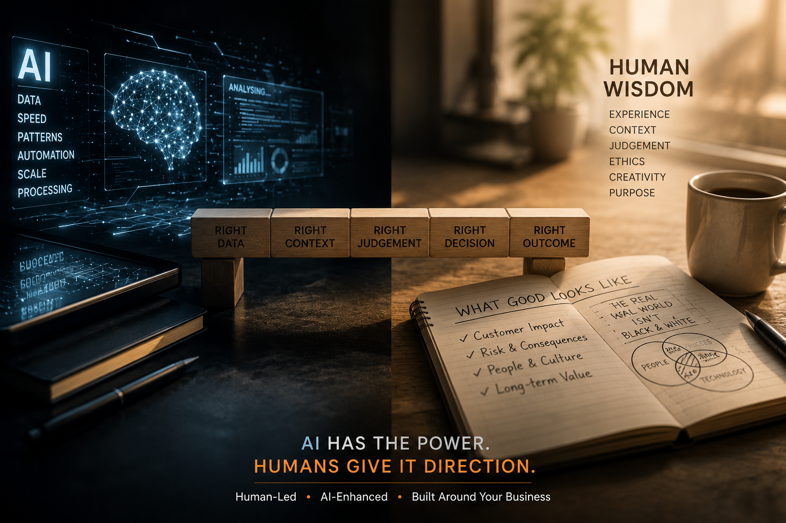
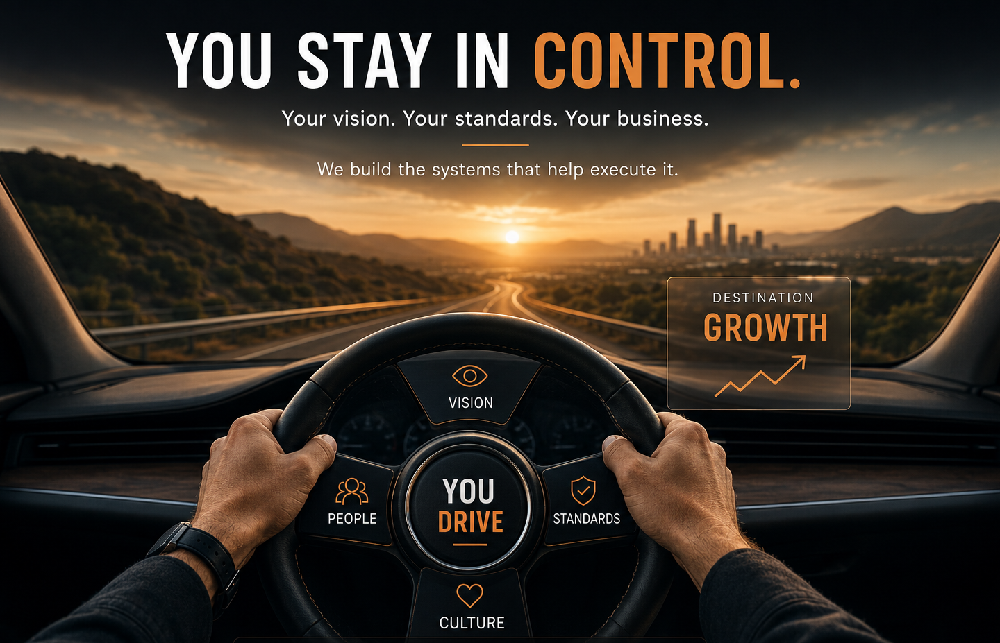

FUSED ID
FUSED ID
Every Business Has Its Own Vision of Success
No two businesses operate the same way. Different customers. Different standards. Different risks. Different priorities. That is why generic AI deployments often fall short.
FUSED ID starts by understanding the business, then builds AI-supported workflows around how the work is actually done.
Built Around Your Business
We do not force a generic system into your operation. We learn the workflow, the people, the tools and the expectations before designing the deployment.
You Stay In Control
AI should support leadership, not replace it. You retain visibility, direction and standards while the system helps carry more of the execution load.
Improved Over Time
Businesses change. So should the systems supporting them. FUSED ID monitors, refines and improves deployments as the business evolves.
AI Might Be Smart. It Is Not Wise.
AI can process information quickly. It can draft, summarise, classify and automate. But it does not understand judgement, risk, exceptions or the practical reality of how business work gets done.
That understanding comes from experience. A successful AI deployment needs people who know what good looks like, where things go wrong, and when human judgement should step in.

Most AI Projects Fail for Practical Reasons
The technology is rarely the only issue. Most AI projects struggle because the workflow is unclear, nobody owns the outcome, quality is not monitored, or the system does not reflect how the business really operates.
Too Much Tool, Not Enough Workflow
AI tools produce outputs, but someone still has to check, copy, chase, decide and keep the process moving.
Poor Instructions Create Poor Results
If the system is not taught what good looks like, the output will always be inconsistent.
No Governance, No Trust
Without checks, escalation paths and review, businesses lose confidence in the system.
Built on Three Principles
FUSED ID combines business experience, practical AI and trusted platforms so deployments are useful, understandable and built to last.
Business Expertise
Successful AI deployments need more than technical skill. They need people who understand the work, the risks, the exceptions and what good looks like in the real world.
Practical AI
We focus on AI systems that reduce manual work, improve consistency and support better execution inside real business workflows.
Trusted Platforms
Where practical, we build on familiar systems such as Microsoft 365, Teams, Outlook, SharePoint, Power Automate, Power BI and Dynamics 365.

Technology Should Support the Business — Not Force the Business to Adapt
The right AI deployment should feel like a natural extension of how your team already works. It should make the business easier to run, not create another disconnected system to manage.
That is why FUSED ID prefers practical, maintainable deployments built around the tools, workflows and operating rhythms already present inside the business where possible.
- Designed around existing workflows
- Built for visibility and control
- Lower dependency on obscure custom systems
- Managed and improved over time
What this means for clients
You do not need to become an AI expert. You need confidence that the systems supporting your business are working, improving and aligned with your direction.
FUSED ID provides the deployment expertise and ongoing support while keeping the business firmly in your hands.
Start the Conversation →